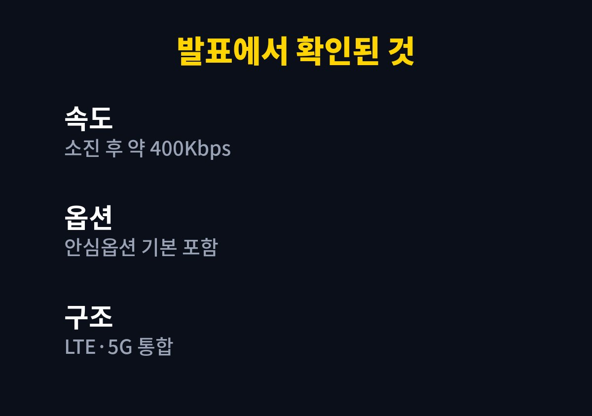
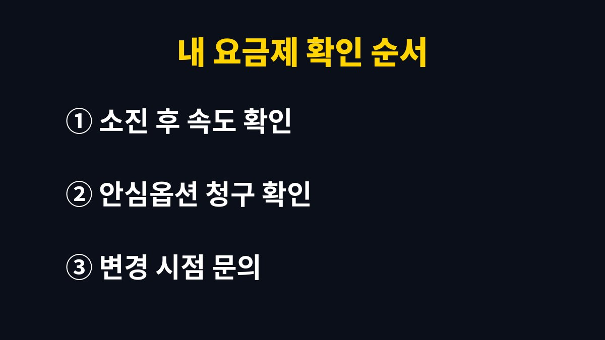

기본통신권 요금제 개편안은 데이터를 다 써도 약 400Kbps 속도로 메신저와 검색은 계속 쓰게 하겠다는 내용이다.
과학기술정보통신부가 2026년 4월 9일 발표한 방향이고, 통신 3사가 함께 참여했다.
이 글은 당시 보도에서 겹치게 확인되는 사실과 보도마다 말이 다른 부분을 나누어 적었으며, 11월 현재 실제 출시 여부는 통신사 안내로 따로 확인해야 한다.
발표 명칭은 「기본통신권 보장을 위한 요금제 개편 방향」이다.
민생물가 특별관리 관계장관 태스크포스 회의에서 공개됐다.
월말에 데이터를 다 쓰면 속도가 확 느려져 지도 앱 한 번 여는 일도 버거워지는데, 이런 상황을 줄이자는 취지다.
같은 날 과기정통부 장관과 통신 3사 대표가 공동선언문도 냈고, 보도에 따르면 보안 체계 강화, 기본 통신권 보장, 네트워크 투자 확대가 담겼다.
월말 이틀을 남기고 데이터가 떨어진 사람을 떠올리면 이해가 쉽다.
지금은 속도 제한이 걸린 채로 지도와 메신저를 같이 쓰다 보면 화면이 멈추는 일이 잦다.
개편안은 이런 상황에서도 글자 메시지와 검색 같은 최소한의 이용은 되도록 하자는 것이 출발점이다.
다만 기본 제공 데이터가 많지 않은 저가 요금제를 중심으로 설계됐다는 점은 짚어 둘 만하다.
서울신문, SBS Biz, 뉴스토마토 세 곳의 4월 보도를 비교해 두 곳 이상에서 겹치거나 한 곳에서 구체적으로 확인된 것만 골랐다.
수치 하나는 한 매체에만 나오기도 해서 비고 칸에 따로 적었다.
| 항목 | 보도 내용 | 비고 |
|---|---|---|
| 신설 5G 요금제 | 월 2만7830원 | 서울신문 기준, 뉴스토마토는 2만원대 요금으로 표기 |
| 기본 제공 데이터 | 250MB | 서울신문에만 수치가 나옴 |
| 데이터 소진 후 속도 | 약 400Kbps | 메신저와 검색은 가능, 고화질 동영상은 어렵다고 설명 |
| 데이터 안심옵션 | 월 5500원 별도 상품에서 기본 포함으로 | 통신 3사 모든 LTE·5G 데이터 요금제가 대상 |
| 요금제 구조 | LTE와 5G를 하나로 통합 | 약 250종을 절반 수준으로 줄인다는 계획 |
| 65세 이상 | 음성·문자 제공 확대 | 약 140만 명 대상, 무제한 표현은 매체마다 다름 |

정부가 밝힌 목표는 상반기 중 절차를 마무리하는 것이었다.
다만 통신 3사의 이용약관 개정과 신고, 전산 시스템 개편이 남아 있다고 보도됐고 구체적인 출시일은 나오지 않았다.
SKT, KT, LG유플러스가 각자 어떤 이름과 요금으로 내놓는지도 4월 기사에서는 확인되지 않는다.
알뜰폰은 통신 3사에 먼저 적용하고 뒤이어 확대하는 계획이라고만 알려졌고, 시기와 방식은 정해지지 않았다.
연간 통신비 절감 효과도 3221억 원, 약 3800억 원, 약 4000억 원으로 보도마다 다르다.
계산 기준이 서로 다르기 때문으로 보이며, 어느 한 숫자를 확정 값으로 쓰기는 어렵다.
속도에 대한 나의 판단도 하나 적어 둔다.
400Kbps는 글자 위주의 대화에는 충분해도 사진이 많은 단톡방이나 길 찾기 지도에서는 답답할 수 있다.
보도도 고화질 동영상은 어렵다고 설명한다.

이 개편안은 방향 발표였고, 내 요금이 실제로 바뀌는 시점은 통신사 공지가 기준이다.
다음에 확인할 것은 가입 중인 통신사의 이용약관 변경 공지 한 가지다.
참고 자료: 과학기술정보통신부 「기본통신권 보장을 위한 요금제 개편 방향」 발표 관련 보도(서울신문·SBS Biz·뉴스토마토, 2026년 11월 확인)
※ 2026년 기준 공식 안내를 바탕으로 정리한 글이며, 기기·앱 버전에 따라 메뉴 이름이 다를 수 있다.